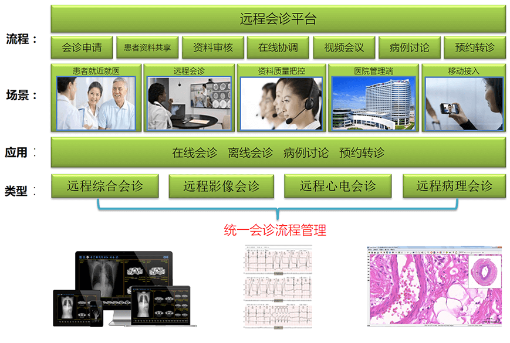

借助蓝创科技“远程会诊系统”，可以充分发挥大医院或专科医疗中心的医疗技术和医疗设备优势，与医疗条件较差的边远地区疗机构或基层乡镇卫生院连接，可以提升其医疗技术水平，使大医院有限的医疗卫生资源发挥最大的作用，实现基层百姓也能享受到远地大医院专家的诊断、治疗和咨询需求。
系统架构

会员操作界面
会员主界面

会诊申请操作
会诊状态管理
患者病历管理
会诊记录查询
会员积分管理
系统通知消息
管理端操作界面
会诊审核
会诊调度
会诊管理
会员管理
会诊专家管理
会诊病历管理
随访查询
产品优势
1. 系统采用B/S架构设计，易于部署与维护
2. 系统功能强大全面，提供短信或邮件提醒功能
3. 操作界面简洁明了，操作流程简单规范
4. 符合国家区域医疗标准规范要求，易于用户使用
5. 易于用户使用
产品价值
1. 可以充分发挥当地大医院或专科医疗中心的医疗技术和医疗设备优势
2. 与医疗条件较差的边远地区疗机构或基层乡镇卫生院连接，可以提升其医疗技术水平，使大医院有限的医疗卫生资源发挥最大的作用
3. 实现基层百姓也能享受到远地大医院专家的诊断、治疗和咨询需求，把分级诊疗制度真正落到实处
典型案例
-项目背景
新疆沙湾县是新疆地区经济优先发展较快的县市之一，辖区面积1.31万平方公里，总人口49万人，其中地方人口31万人，辖9镇、3乡、5个农牧林场和2个管理处、250个村。因此，新疆沙湾县卫生计生管理部门要求，借助沙湾县智慧医疗项目的建设，推进县域内健康服务的信息化发展，制定相关信息数据标准规范，实现医疗保障、医疗服务、健康管理等信息的共享；实现网上预约挂号、居民健康档案信息查询等服务功能；实现县域内各医疗卫生机构之间的业务协同需求。
-应用效果
通过实施区域医疗信息平台，实现了新疆沙湾县内各医疗卫生机构之间的信息共享和互联互通，并基于平台重组和优化了医疗卫生服务业务流程，实现了医疗服务、人口计生、公共卫生、药品管理、医疗保障和综合管理等六大业务应用，为沙湾县卫生计生管理部门提供了科学决策提依据；通过平台提供的居民健康门户网站及掌上医院系统，全县居民可以采用电脑、自助查询机和手机等多种方式查看自己的健康档案信息、网上预约挂号、缴费以及自助打印等信息服务功能；通过平台提供的业务协同子系统，县级各医疗机构已全部实现与基层12个乡镇卫生院之间的远程会诊和双向转诊业务，真正实现了“小病在社区、大病去医院、康复回社区”的分级诊疗制度。